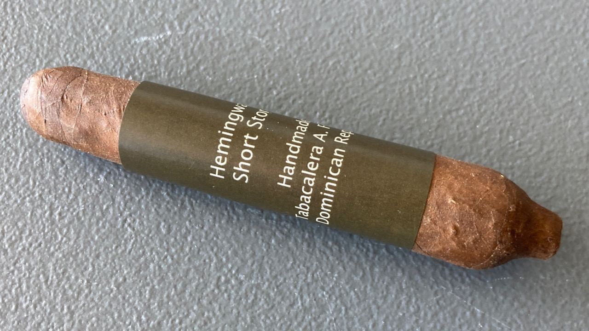
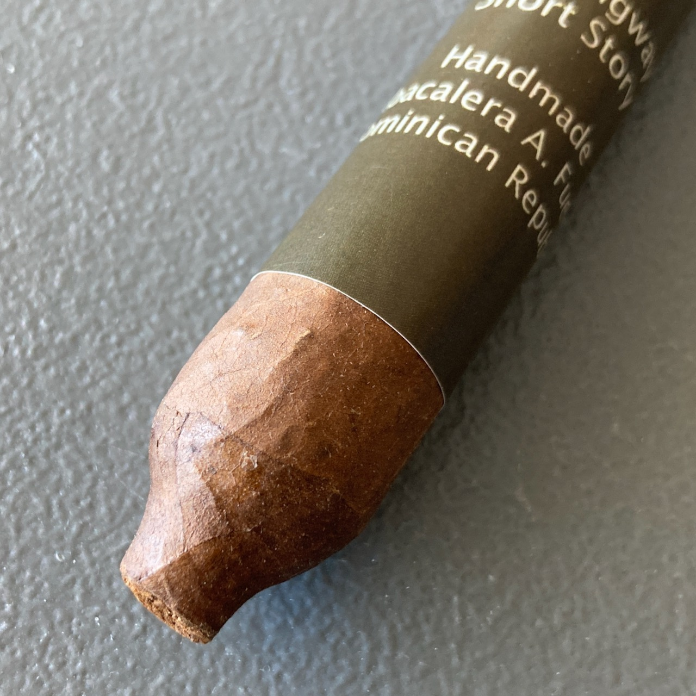
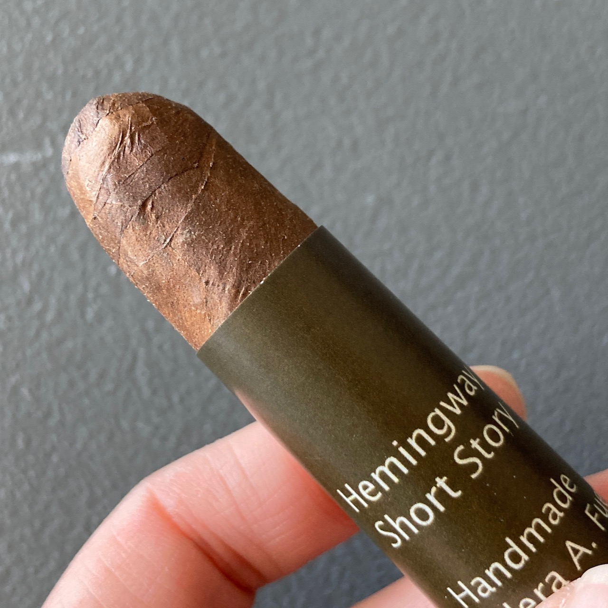
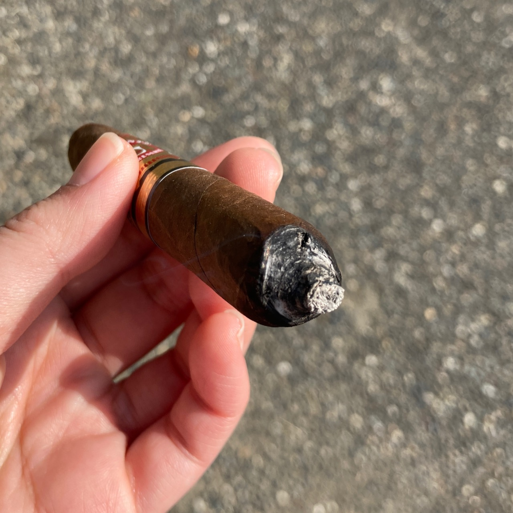
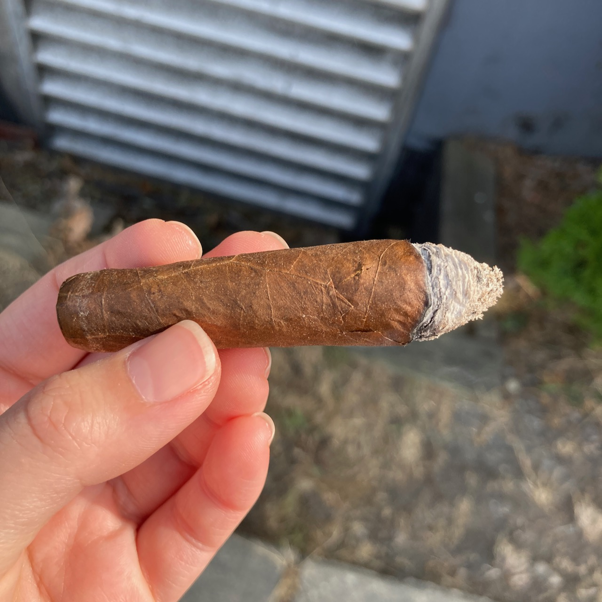
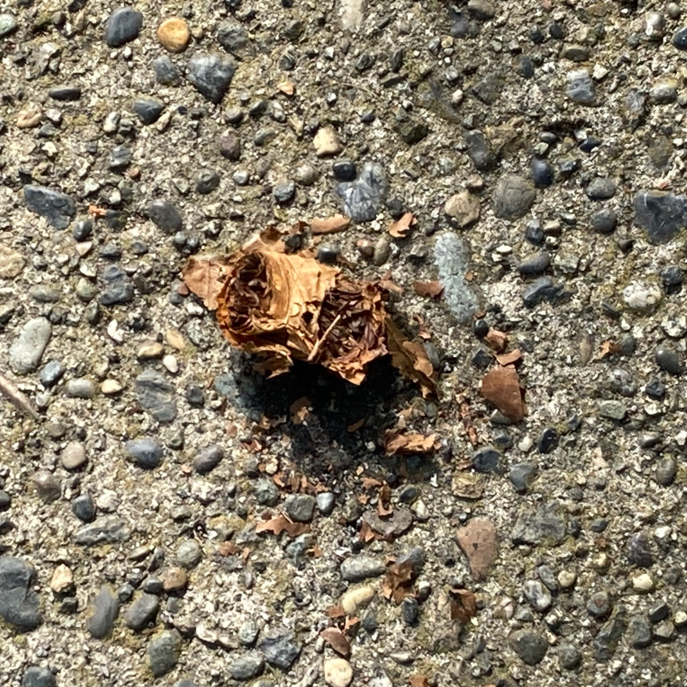

Cigar Review: Arturo Fuente Hemingway Short Story
This is a cigar with a weird body shape. Let's take a look!
  
I wasn't sure how to light this up. I was just trying to light up the very little tip at the end of the foot, but the burn went pretty crooked after. Not too bad though, I just had to constantly watch it and have it fixed.

This is quite a smoky cigar. The draw was actually not bad. It feels a bit loosely pack from the press on certain parts of the cigar body. The ash is kinda funny that it just shaped as the cigar.
Flavour-wise, I tasted pretty solid woody nuts. It was slightly bitter in the middle. It's not the smoothest cigar that I've ever tasted, but probably like medium smooth if I were to give it a rating. It has a strong tobacco taste to it as well. Not much note about the flavours until pretty much the end otherwise.

The smoke time was about 30 minutes. I could have gone a little bit longer, but it was too hot on that day that I could not hold it in my hand. Just as I took the last few draws, I got a nice coca sweet flavour. This is strange to me because the last third usually taste like tar from my past experience. Really wish I could have hold it in my hands for longer.

It was a rather calm day not much wind. I just walked around the neighbourhood where I usually pick up my New World cigars. It was pretty chill overall. The only slight unpleasant part was I walked through a construction site and a van went by with a good speed that blew up all the dust. I was on the pedestrian path, but that still made my cigar a bit dusty. 🚜 🚧 No going back to that area next time.
Thanks for reading! If you enjoy this post, please consider supporting this website and allow me to share more of my cigar journey with you. Thank you and I hope you will have a wonderful day! 🎯